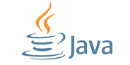

Disciplinas
-
PROGRAMAÇÃO ORIENTADA A OBJETOS-T01-2024-1 Concluído
Materiais
Vídeo 1 - [UFMS Digital] Programação Orientada a Objetos - Módulo 1 - Unidade 2. sendProfessor ministrante: Prof. Dr. Anderson Viçoso de Araújo
Conteúdo
Introdução ao Java.
Características.
- Portabilidade;
- Robustez;
- Segurança;
- Orientada a Objetos;
- Dinâmica;
- Alto desempenho.

Fonte:
https://www.oracle.com/java/
Linguagem Híbrida.
Compilada e Interpretada.
Programa .java ↓
É compilado por ↓
Compilador Java ↓
Gera ↓
Programa. class (bytecode) ↓
Interpretado por ↓
JVM ↓
000100101 ↓
Program
Ambiente Java Típico.
- Fase 1 - Editor
- O programa é criado no editor e armazenado em disco (.java).
- Fase 2 - Compilador
- O compilador cria o arquivo bytecode (.class).
- Fase 3 - Carregador de Classe
- Carrega o arquivo bytecode (.class) na memória.
- Fase 4 - Verificador de Bytecode
- Confirma se os dados do arquivo são válidos.
- Fase 5 - Interpretador
- A JVM lê e traduz para uma linguagem que o computador pode entender.
Plataforma Java.
- A plataforma Java tem dois componentes:
- Java Virtual Machine (Java VM ou JVM);
- Java Application Programming Interface (Java API).
Executando em Linha de Comando.
- Compilar
- javac HelloWorld.java
- (JVM vai gerar um arquivo.class com o bytecode através do seu compilador)
- Executar
- java HelloWorld
- (JVM vai executar o código bytecode através do seu interpretador)
Exemplo - Hello World.
Código Executado:
public class HelloWorld{
public static void main(String[] args) {
System.out.println("Hello World!");
}
}
Código Gerado:
Java x Bytecode
Compiled from "HelloWorld.java"
public class HelloWorld {
public HelloWorld();
Code:
0: aload 0
1: invokespecial #238 // Method java/lang/Object."":()V
4: return
public static void main(java.lang.String[]);
Code:
0: getstatic #16 // Field
java/lang/System.out: Ljava/io/PrintStream;
3: ldc #22 // String Hello World
5: invokevirtual #24 // Method
java/io/PrintStream.println: (Ljava/lang/String;) V
8: return
}
Características da Linguagem Java
- Letras minúsculas e maiúsculas são diferentes;
- Não há distinção de onde começar a digitar o programa
- É possível adicionar espaços em pontos estratégicos para facilitar a leitura do programa (recuo ou indentação);
- A maioria das instruções devem terminar com ponto e vírgula (;);
- Chaves são utilizadas para definir códigos internos ({});
- Comentários:
- // comentário em uma linha
- /* comentário em múltiplas linhas*/
Palavras Reservadas
| abstract | continue | for | new | switch |
| assert*** | default | goto* | package | synchronized |
| boolean | do | if | private | this |
| break | double | implements | protected | throw |
| byte | else | import | public | throws |
| case | enum | instanceof | return | transient |
| catch | extends | int | short | try |
| char | final | interface | static | void |
| class | finally | long | strictfp** | volatile |
| const | float | native | super | while |
| * | not used | *** | added in 1.4 |
| ** | added in 1.2 | **** | added in 5.0 |